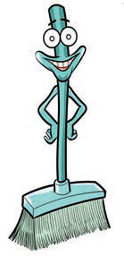
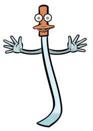
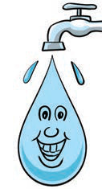
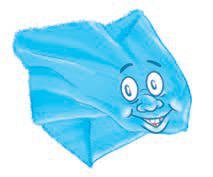
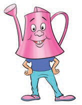

I am a hard brush. I scrub the floor to make it clean.

A smiling, long-handled hard brush with stiff bristles.
I am a slasher. I cut long grasses.

A slasher for cutting long grass.
I am water. Use me to clean your surroundings.

Water from a tap used to clean the surroundings.
I am a piece of clean cloth. Use me to remove dust.

A clean cloth used to remove dust.
A watering can used to water trees and flowers.
I am a watering can, use me to water trees and flowers.